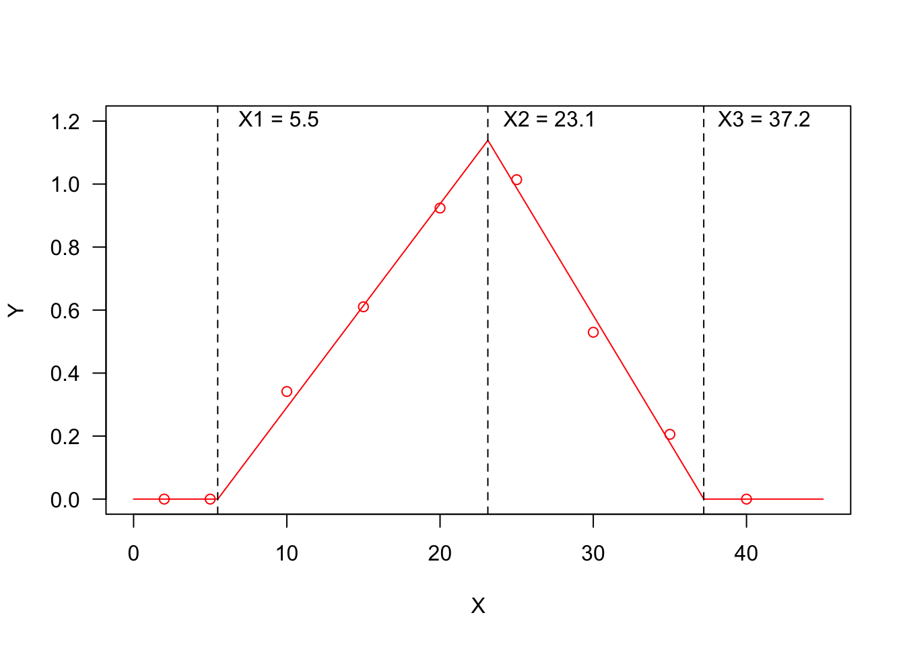
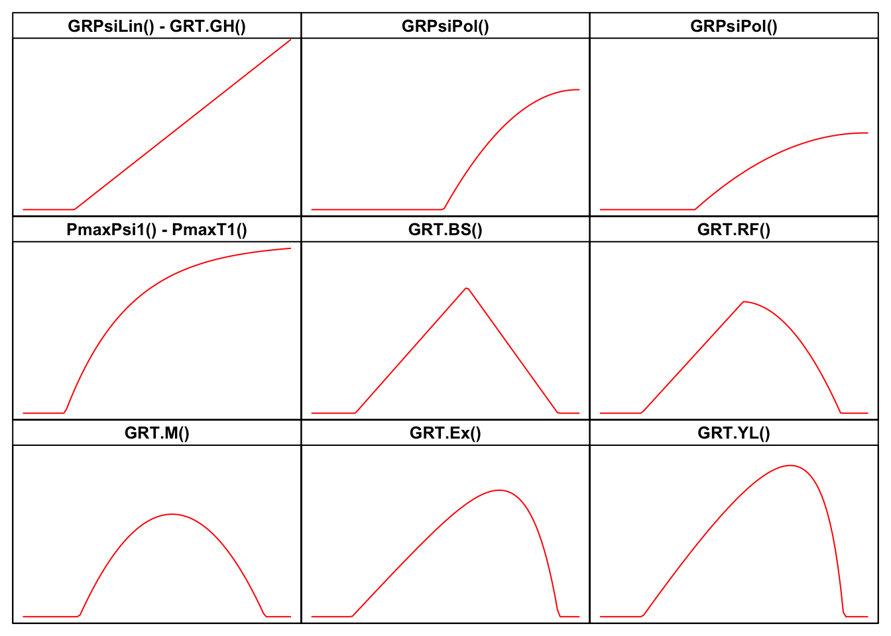
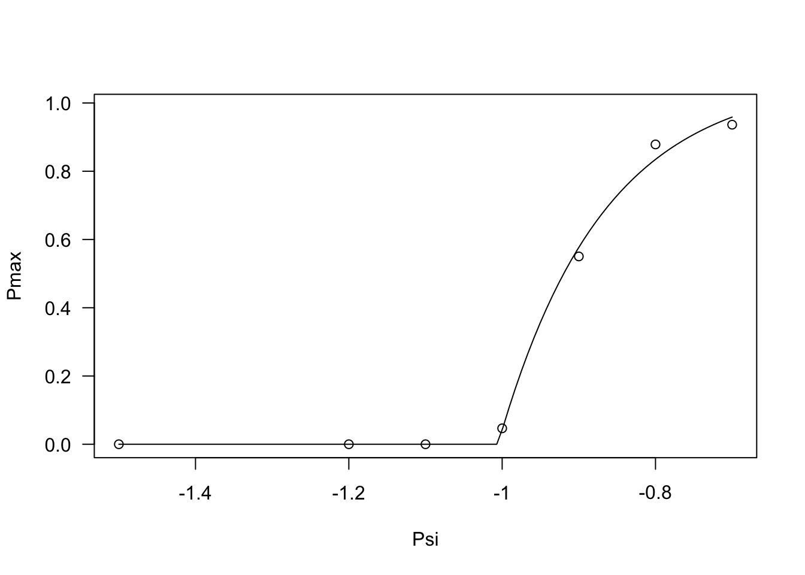
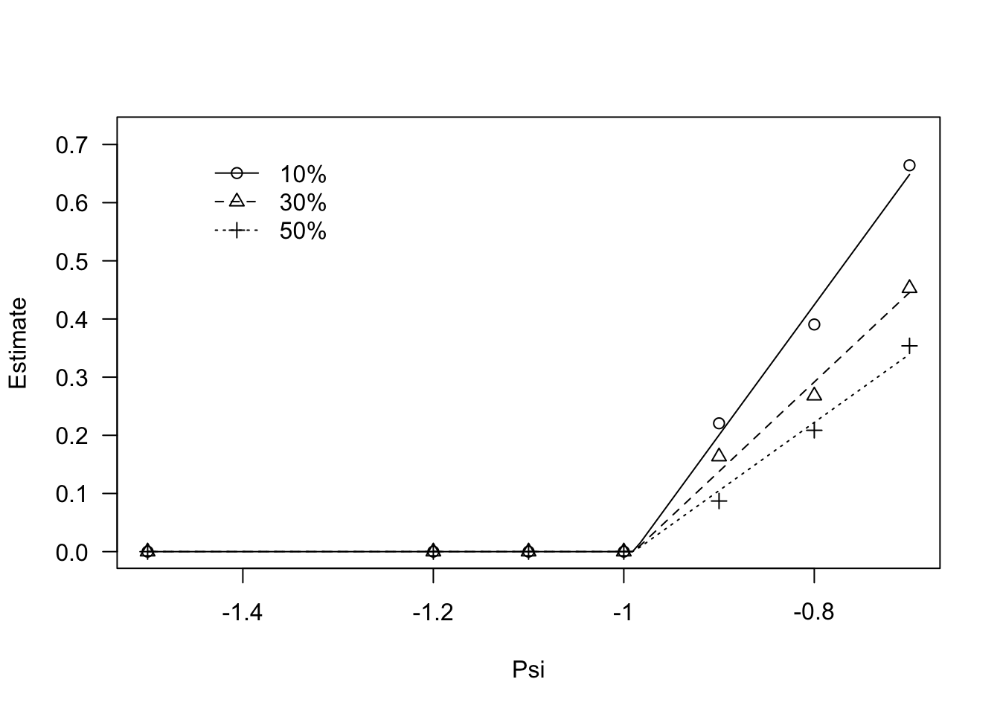
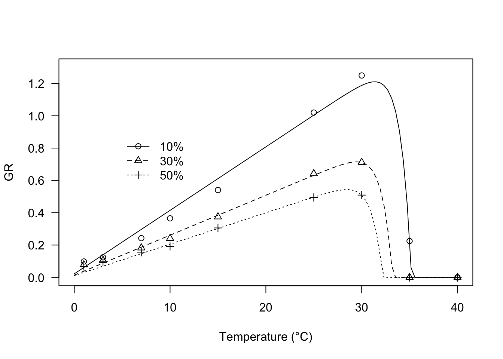

Section 10 Fitting germination models in two steps
In the previous sections I have shown how to fit time-to-event curves to seed germination data. I have also shown that these curves can be modified to include the effect of external factors (e.g., the species) or covariates (e.g., temperature or humidity content in the substrate), which brought us to the definition of hydro-time, thernal-time or hydro-thermal-time models. So far, in this tutorial, we have fitted these modified time-to-event curves in ‘one-step’, i.e., we started from the germination data, fitted the selected model and retrieved the estimates of model parameters. In such a one-step approach, we showed that one problem was that, most of the times, seeds were not independent, but, they were clustered within Petri dishes, trays, boxes or other containers. Such a clustering, if not appropriately accounted for, brakes the independence assumption that is made by most linear and nonlinear models, invalidating the inferences based on those models.
So far, we have accounted for the above mentioned clustering by using cluster robust standard errors, which are easily calculated within the ‘drcte’ package. However, we should also say that one-step model fitting may often be complex, particularly when we have to deal with a high number of seeds, complex models and multi-tier experimental designs. In order to avoid such complexities, we might like to follow a different approach, that is accomplished in two-steps. Let’s consider an example where we have performed germination assays where seeds have been submitted to 10 different treatment levels: instead of building a time-to-event model that contains the treatment as an external factor, we could:
- independently fit a different time-to-event curve to the germination data for each treatment level, so that we have ten independent time-to-event curves;
- derive from each curve a summary statistic of interest, such as the germination rate for the 50-th percentile (GR50; see earlier in this tutorial);
- fit, e.g., a thermal-time model to those derived statistics (second step of data analyses).
Fitting models in two-steps has always been a common practice in agriculture/biology (see, e.g., multienvironment genotype experiments): it is usually simpler, quicker and requires lower computing power than one-step fitting. The drawback is that some infomation may be lost between the two steps, and, for this reason, one-step and two-steps model fitting do not necessarily lead to the same results. But, we’ll make this point later.
Let’s show some examples of this two-steps approach.
10.2 Fitting non-linear threshold models in two steps
10.2.1 Definition of threshold models
Threshold models are used to describe a relationship where the response variable changes abruptly, following a small change in the predictor. A typical threshold model looks like that in the Figure below, where we see three threshold levels:
- \(X1 = 5.5\): at this threshold, the response changes abruptly from ‘flat’ to linearly increasing;
- \(X2 = 23.1\): at this threshold, the response changes abruptly from linearly increasing to linearly decreasing;
- \(X3 = 37.2\): at this threshold, the response changes abruptly from linearly decreasing to ‘flat’.
You may recognise a ‘broken-stick’ pattern, although threshold models can also be curvilinear, as we will see later.

I have already considered threshold models in a previous post (see here) and I have already mentioned that thermal-time, hydro-time and hydro-thermal-time models for seed germination can also be cast as threshold models; if we consider, e.g., the Germination Rate (GR) as the response variable and the environmental temperature as the predictor, the relationship could be very close to that represented in Figure 1 and the three thresholds would, respectively, be the base temperature (T_b_), the optimal temperature (T_o_) and the ceiling temperature (T_c_). On the other hand, if we consider the effect of soil humidity on GR, we should expect a response pattern with only one threshold, i.e. the base water potential level (e.g. the first half of the figure above, up to the maximum response level).
10.2.2 A (possibly incomplete) list of threshold models
I have made a review of literature, searching for all threshold models that have been used so far in seed germination studies. For all those models, I have built the related R functions, together with self-starting routines, which can be used for nonlinear regression fitting with the drm() function in the drc package (Ritz et al., 2019). The availability of self-starting routines will free you from the hassle of having to provide initial guesses for model parameters. All these R functions are available within the drcSeedGerm package (Onofri et al., 2018) and their names, with links to the relevant parts of the appendix to this post are:
- GRPsi.Lin() - GRT.GH()
- GRPsi.Pol() - GRPsi.Pol2()
- PmaxPsi1() - PmaxT1()
- GRT.BS()
- GRT.RF()
- GRT.M()
- GRT.Ex()
- GRT.YL()
It may be helpful to look at the shapes of the above models in the Figure below, while the equations are motivated in the appendix, at the end of this post.

Now, let’s look at a few examples of two-steps fitting. But, before working through this, you will need to install and load the drcSeedGerm package, by using the code below.
# installing drcSeedGerm package, if not yet available
# library(devtools)
# install_github("onofriandreapg/drcSeedGerm")
# loading package
library(drcSeedGerm)
library(tidyverse)
library(lmtest)
library(sandwich)10.2.3 Description of models
10.2.3.1 GRPsiLin() - GRT.GH()
The equation behind GRPsiLin() has been used to describe the effect of environmental humidity (\(\Psi\), in MPa) on germination rate (Bradford, 2002):
\[GR = \frac{\max\left[\Psi, \Psi_b\right] - \Psi_b}{\theta_H}\]
The parameter \(\Psi_b\) is the base water potential (in MPa), representing the minimum level of humidity in the substrate to trigger the germination process. The other parameter \(\theta_H\) (in MPa day or MPa hour) is the hydro-time constant.
A totally similar equation (with different parameter names) has been used by Garcia-Huidobro et al (1982), to describe the effect of sub-optimal temperatures (T in °C) on the germination rate:
\[GR = \frac{\max \left[T, T_b\right] - T_b}{\theta_T}\]
where \(T_b\) is the base temperature and \(\theta_T\) is the thermal time (in °C d). This second model is available GRT.GH().
# sample code (not executed)
# Tlev <- c(2, 5, 10, 15, 20, 25)
# GR <- c(0, 0, 0.21, 0.49, 0.68, 0.86)
# modGH <- drm(GR ~ Tlev, fct = GRT.GH())
# library(sandwich); library(lmtest)
# coeftest(modGH, vcov = sandwich)
# plot(modGH, log="", xlim = c(0, 25), legendPos = c(5, 1.2),
# xlab = "Temperature (°C)")10.2.3.2 GRPsiPol() - GRPsiPol2()
In my experience, I have found that the relationship between GR and water potential in the substrate may, sometimes, be curvilinear. For these situations, I have successfully used the following equations:
\[GR = \frac{\max\left[\Psi,\Psi_b\right]^2 - \Psi^2_b}{\theta_H}\]
and:
\[GR = \frac{\left(\max\left[\Psi, \Psi_b\right] - \Psi_b \right)^2}{ \theta_H }\]
Both models can be fitted in R, by using the two functions GRPsi.Pol() and GRPsi.Pol2()
# sample code (not executed)
# Psi <- c(-2, -1.5, -1.2, -1, -0.8, -0.6, -0.4, -0.25,
# -0.12, -0.06, -0.03, 0)
# GR <- c(0, 0, 0, 0, 0.0585, 0.094, 0.1231, 0.1351,
# 0.1418, 0.1453, 0.1458, 0.1459)
# Psi2 <- c(-0.5, -0.6, -0.7, -0.8, -0.9, -1, -1.1, -1.2,
# -1.5)
# GR2 <- c(1.4018, 1.0071, 0.5614, 0.3546, 0.2293, 0, 0,
# 0, 0)
#
#
# modHT <- drm(GR ~ Psi, fct = GRPsiPol())
# modHT2 <- drm(GR2 ~ Psi2, fct = GRPsiPol2())
# par(mfrow = c(1,2))
# plot(modHT, log="", legendPos = c(-1.5, 0.15),
# ylim = c(0, 0.20), xlab = "Water potential (MPa)")
# plot(modHT2, log="", legendPos=c(-1.3, 1),
# xlab = "Water potential (MPa)")10.2.3.3 PmaxPsi1() and PmaxT1()
All the previous models tend to go up to infinity when the predictor value (temperature or water potential) goes to infinity. In some instances, we may need an asymptotic model, to describe the response of the maximum proportion of germinated seeds to soil humidity (Onofri et al., 2018).
In practice, we could use a shifted exponential model:
\[ \pi = G \, \left[ 1 - exp \left( \frac{ \max\left[\Psi, \Psi_b\right] - \Psi_b }{\sigma} \right) \right]\]
where \(\pi\) is the proportion of germinated seeds, \(G\) is the fraction of non-germinable seeds (e.g., dormant seeds) and \(\sigma\) describes how quickly the population of seeds responds to increased humidity in the substrate. This model can be fitted by using the R function the self-starters PmaxPsi1().
If we reverse the sign of \(\sigma\) in the previous equation, we obtain a decreasing trend, which might be useful to describe the effect of super-optimal temperatures on the proportion of germinated seeds, going down to 0 at the ceiling temperature threshold. Also this model is available in R, under the name PmaxT1(). PmaxPsi1() PmaxT1() are two equivalent R functions, apart from the name of model parameters.
# sample code (not executed)
# par(mfrow = c(1,2))
# # Pmax vs Psi
# Psi <- seq(-2.2, 0, by = 0.2)
# Pmax <- c(0, 0, 0.076, 0.413, 0.514, 0.643, 0.712,
# 0.832, 0.865, 0.849, 0.89, 0.90)
# mod <- drm(Pmax ~ Psi, fct = PmaxPsi1())
# plot(mod, log = "", xlab = "Water potential (MPa)",
# ylab = "Proportion of germinating seeds")
#
# # Pmax vs temperature
# Tval <- c(0, 2.5, 5, 7.5, 10, 12.5, 15, 17.5,
# 20, 22.5, 25, 27.5, 30, 32.5, 35)
# Pmax2 <- c(0.79, 0.81, 0.807, 0.776, 0.83,
# 0.73, 0.744, 0.73, 0.828, 0.818,
# 0.805, 0.706, 0.41, 0.002, 0)
# mod2 <- drm(Pmax2 ~ Tval, fct = PmaxT1())
# plot(mod2, log = "", xlab = "Temperature (°C)",
# ylab = "Proportion of germinating seeds")10.2.3.4 GRT.BS()
A broken-stick trend, as the one depicted in the first Figure above was used by Alvarado and Bradford (2002) to model the effect of temperature on the germination rate. Their equation is:
\[GR = \frac{\max \left[\min \left[T,T_o \right], Tb \right] - T_b}{\theta_{T}} \, \left\{ 1 - k \left( \max \left[ T,T_o \right] - T_o \right) \right\}\] The right factor is only meaningful when it is positive, that happens when \(T < T_c\), i.e. when the environmental temperature is lower than the ceiling temperature. On this basis, the ceiling temperature is equal to:
\[ T_c = \frac{1}{k} + T_o\]
The above equation can be easily fitted with the GRT.BS() function in the ‘drcSeedGerm’ package. We have also implemented the reparameterised equation, where the parameter ‘k’ is replaced with \(1/(T_c - T_b)\):
\[GR = \frac{\min \left[T,T_o \right] - T_b}{\theta_{T}} \, \left\{ 1 - \frac {\min \left[\max \left[ T,T_o \right], T_c \right] - T_o}{T_c - T_o} \right\}\]
This reparameterised equation is available as GRT.BSb(); it is handy, because the ceiling temperature is included as a parameter, but its fitting properties are not as good as those of the previous equation.
# sample code
# Tval <- c(2, 5, 10, 15, 20, 25, 30, 35, 40)
# GR <- c(0, 0, 0.209, 0.435, 0.759, 0.821, 0.417, 0.145, 0)
#
# modBS <- drm(GR ~ Tval, fct = GRT.BS())
# plot(modBS, log="", xlim = c(0, 40), ylim=c(0,1.2),
# legendPos = c(5, 1.0), xlab = "Temperature (°C)")
# coeftest(modBS, vcov = sandwich)
#
# # Reparameterised (self-starter is less accurate)
# modBS <- drm(GR ~ Tval, fct = GRT.BSb())
# plot(modBS, log="", xlim = c(0, 40), ylim=c(0,1.2),
# legendPos = c(5, 1.0), xlab = "Temperature (°C)")
# coeftest(modBS, vcov = sandwich)10.2.3.5 GRT.RF()
Broken-stick trends may not be reasonable for biological processes, which might be better described by curvilinear equations. Rowse and Finch-Savage (2003) proposed another equation with two components: the first one depicts a linear increase of the GR value with temperature, which is off-set by the second component, starting from \(T = T_d\), which is close to (but not coincident with) \(T_o\). The equation is:
\[GR = \frac{ \max \left( T, T_b \right) - T_b}{\theta_{T}} \left\{ 1 - k \left[ \max \left(T,T_d\right) - T_d \right] \right\}\] The optimal temperature can be derived as:
\[ T_o = \frac{1 + kT_b + kT_d}{2k}\] while the ceiling temperature is:
\[ T_c = \frac{1}{k} + T_d\]
For this equation, you will find the GRT.RF() self-starter in the ‘drcSeedGerm’ package. We also provide the self-starter GRT.RFb(), where the parameters ‘k’ is replaced by $ 1/(T_c - T_d)$:
\[GR = \frac{ \max \left[ T, T_b \right] - T_b}{\theta_{T}} \left\{ 1 - \frac{\left[ \max \left(T,T_d\right) - T_d \right]}{T_c - T_d} \right\}\]
This reparameterised equation contains the ceiling temperature as a parameter, but its fitting properties are as good as those pf the previous equation.
10.2.3.6 GRT.M()
According to Mesgaran et al (2017), the negative and positive effects of temperature coexist for all temperatures above \(T_b\). Their proposed equation is:
\[GR = \frac{ \max \left( T, T_b \right) - T_b}{\theta_{T}} \left\{ 1 - k \left[ \min \left(T,T_c\right) - T_b \right] \right\}\] This equation is only defined from base to ceiling temperature, while it is 0 elsewhere. The ceiling temperature is:
\[ T_c = \frac{1}{k} + T_b\]
It is also easy to see that the GR value is a second-order polynomial function of \(T - T_b\) and, therefore, the curve is symmetric around the optimal temperature value, which can be derived as:
\[T_o = \frac{T_c - T_b}{2} + T_b\]
For this model, the self-starting function in drcSeedGerm is GRT.M(). The model can also be reparameterised to include the ceiling temperature as an explicit parameter:
\[GR = \frac{\max \left[ T, T_b \right] - T_b}{\theta_{T}} \left[ 1 - \frac{\min \left[ T, T_c \right] - T_b}{T_c - T_b} \right]\]
This reparameterised model is available as GRT.Mb().
# Sample code (not executed)
# Tval <- c(2, 5, 10, 15, 20, 25, 30, 35, 40)
# GR <- c(0, 0, 0.209, 0.435, 0.759, 0.821, 0.417, 0.145, 0)
# modM <- drm(GR ~ Tval, fct = GRT.Mb())
# plot(modM, log="", xlim = c(0, 40), ylim=c(0,1.2),
# legendPos = c(5, 1.0), xlab = "Temperature (°C)")
# coeftest(modM, vcov. = sandwich)10.2.3.7 GRT.Ex()
All the equations above use a product, wherein the first term represents the accumulation of thermal time and the second term may be seen as a switch-off term that is 1 either when \(T < T_o\) (Alvarado-Bradford equation) or \(T < T_d\) (Rowse-Fintch-Savage equation) or \(T = T_b\) (Mesgaran equation) and decreases progressively as temperature increases. In all the above equations, the switch-off term is linear, although we can use other types of switch-off terms, to obtain more flexible models. One possibility is to use an exponential switch-off term, as in the equation below:
\[ GR = \frac{\max \left[T, T_b \right] - T_b}{\theta_T} \left\{ \frac{1 - \exp \left[ k (\min \left[T, T_c \right] - T_c) \right]}{1 - \exp \left[ k (T_b - T_c) \right]} \right\}\]
where \(k\) is the switch-off parameter: the lower the value, the higher the negative effect of temperature at super-optimal levels. The response of GR to temperature is highly asymmetric with a slow increase below \(T_o\) and a steep drop afterwards.
I have successfully used this model in Catara et al (2016) and Masin et al (2017). The self-starting function in R is GRT.Ex().
# Sample code
# Tval <- c(2, 5, 10, 15, 20, 25, 30, 35, 40)
# GR <- c(0, 0, 0.209, 0.435, 0.759, 0.821, 0.917, 0.445, 0)
#
# modExb <- drm(GR ~ Tval, fct = GRT.Ex())
# summary(modExb)
# plot(modExb, log="", xlim = c(0, 40), ylim=c(0,1.2),
# legendPos = c(5, 1.0), xlab = "Temperature (°C)")10.2.3.8 GRT.YL()
Another switch-off function can be derived from the simple yield loss function devised by Kropff and van Laar (1993). It is very flexible, as it may depict different types of relationships between temperature and base water potential, according to the value taken by the parameter \(q\).
\[GR(g, T) = \frac{\max \left[T, T_b\right] - T_b}{\theta_T} \left( 1 - \frac{q \frac{\min \left[T, T_c\right] -T_b}{T_c- T_b} }{1 + (q-1) \frac{T-T_b}{T_c- T_b}} \right)\]
In R, this model can be fitted by using the self-starter GRT.YL().
# sample code
# Tval <- c(2, 5, 10, 15, 20, 25, 30, 35, 40)
# GR <- c(0, 0, 0.209, 0.435, 0.759, 0.821, 0.917, 0.445, 0)
# modYL <- drm(GR ~ Tval, fct = GRT.YL())
# plot(modYL, log="", xlim = c(0, 40), ylim=c(0,1.2),
# legendPos = c(5, 1.0), xlab = "Temperature (°C)")10.2.4 Example 1
This dataset describes the germination of rapeseed (cv. Excalibur) at different water potential levels in the substrate. It has been already used for fitting a hydro-time model in one step (see here); in this present post, we try a different line of attack.
First of all, we remove all dishes with water potential levels higher than -0.7 MPa, because the germinations were too quick to obtain a reliable estimate of the whole time-to-event curve. Next, we independently (‘separate = T’) fit a time to event model to the data observed in each dish. Lately, for each time to event curve, we retrieve the maximum proportion of germinated seeds (Pmax, i.e. the ‘d’ parameter of the time-to-event curve) and the germination rates for the 10th, 30th and 50th percentile.
# First-step of data analyses
data(rape2G)
rape2G <- rape2G %>%
dplyr::filter(Psi <=-0.7 & CV == "Excalibur") %>%
mutate(Dish2 = paste(Dish, Psi, sep = ":"))
# model fit
mod.first <- drmte(nSeeds ~ timeBef + timeAf,
data = rape2G,
fct = LL.3(), curveid = Dish2,
separate = T)
# Retrieve maximum proportion of germinated seeds
Pmax <- coef(mod.first)[substr(names(coef(mod.first)), 1, 1) == "d"]
PmaxList <- tibble(Pmax = Pmax) %>%
mutate(temp = names(Pmax), .before = Pmax) %>%
separate(col = "temp", into = c("n", "Dish", "Psi"),
sep = ":") %>%
mutate(Psi = as.numeric(Psi)) %>%
select(-1)
head(PmaxList)
## # A tibble: 6 × 3
## Dish Psi Pmax
## <chr> <dbl> <dbl>
## 1 64 -0.7 0.901
## 2 65 -0.7 0.986
## 3 66 -0.7 0.922
## 4 67 -0.8 0.914
## 5 68 -0.8 0.887
## 6 69 -0.8 0.835
# Retrieve the GR values
GR <- quantile(mod.first, rate = T, probs = c(0.1, 0.3, 0.5))
GRlist <- tibble(temp = row.names(GR), GR, row.names = NULL) %>%
separate(col = "temp", into = c("Dish", "Psi", "g"),
sep = ":") %>%
mutate(Psi = as.numeric(Psi)) %>%
remove_rownames()
head(GRlist)
## # A tibble: 6 × 5
## Dish Psi g Estimate SE
## <chr> <dbl> <chr> <dbl> <dbl>
## 1 64 -0.7 10% 0.581 0.0895
## 2 64 -0.7 30% 0.416 0.0397
## 3 64 -0.7 50% 0.333 0.0239
## 4 65 -0.7 10% 0.718 0.149
## 5 65 -0.7 30% 0.468 0.0595
## 6 65 -0.7 50% 0.357 0.0330Now, we are ready to move on to the second step of data analysis. Relating to the Pmax value, we can see that this values stays constant and equal to 0 up to -1 MPa and increases steadily afterwords. We can model this behaviour by using the PmaxPsi1() function, as shown in the box below.
modPmax <- drm(Pmax ~ Psi, data = PmaxList,
fct = PmaxPsi1())
plot(modPmax, log = "")
coeftest(modPmax, vcov. = sandwich)
##
## t test of coefficients:
##
## Estimate Std. Error t value Pr(>|t|)
## G:(Intercept) 1.0737381 0.0746708 14.3796 2.608e-11 ***
## Psib:(Intercept) -1.0053956 0.0016495 -609.5109 < 2.2e-16 ***
## sigma:(Intercept) 0.1367469 0.0272873 5.0114 9.058e-05 ***
## ---
## Signif. codes: 0 '***' 0.001 '**' 0.01 '*' 0.05 '.' 0.1 ' ' 1Regarding the germination percentiles, a look at the data shows that, for all percentiles, germination rates stay constant up to -1 MPa and, afterwords, they increase linearly. We can model this behaviour by using the GRPsiLin() equation and, following Bradford (2002), we code a common base water potential level for the different germination percentiles. The code is given in the box below.
modGR <- drm(Estimate ~ Psi, data = GRlist,
fct = GRPsi.Lin(), curveid = g,
pmodels = list(~1, ~g - 1))
plot(modGR, log = "",
legendPos = c(-1.3, 0.7))
coeftest(modGR, vcov. = sandwich)
##
## t test of coefficients:
##
## Estimate Std. Error t value Pr(>|t|)
## Psib:(Intercept) -0.989504 0.031937 -30.9832 < 2.2e-16 ***
## thetaH:g10% 0.446550 0.081366 5.4881 8.977e-07 ***
## thetaH:g30% 0.649827 0.099213 6.5498 1.557e-08 ***
## thetaH:g50% 0.852974 0.134058 6.3627 3.209e-08 ***
## ---
## Signif. codes: 0 '***' 0.001 '**' 0.01 '*' 0.05 '.' 0.1 ' ' 1Usually, we are interested in the base osmotic potential level (\(\Psi_b\)) that is given in the output of the coeftest() method. We used coeftest() in the lmtest package for reasons that will be clearer later on.
10.2.5 Example 2
This second dataset was obtained from a germination assays with barley, where three replicates of 50 seeds were placed in Petri dishes and assayed at 9 constant temperature levels (1, 3, 7, 10, 15, 20, 25, 30, 35, 40 °C). Germinated seeds were counted and removed daily for 10 days. We have already presented this analysis in a previous paper (Onofri et al., 2018), although in this post we use a different (and updated) coding.
Also in this second example, the first step of data analysis is based on loading the data and fitting a separate time-to-event curve to the data at each temperature level.
data(barley)
barley <- barley %>%
mutate(TempF = factor(Temp))
mod1 <- drmte(nSeeds ~ timeBef + timeAf, fct=W2.3(),
curveid = TempF,
data = barley,
separate = T)Now, we retrieve the germination rates for the 10^th, 30th and 50th percentile; for analogy with the published paper, we restrict the percentiles to the germinated fraction, althoug it might be better to avoid such a restriction.
GR <- quantile(mod1, rate = T, restricted = T,
probs = c(0.1, 0.3, 0.5),
display = F)
GRlist <- tibble(temp = row.names(GR), GR, row.names = NULL) %>%
separate(col = "temp", into = c("Temp", "g"),
sep = ":") %>%
mutate(Temp = as.numeric(Temp)) %>%
remove_rownames()
head(GRlist)
## # A tibble: 6 × 4
## Temp g Estimate SE
## <dbl> <chr> <dbl> <dbl>
## 1 1 10% 0.0982 0.00328
## 2 1 30% 0.0777 0.00177
## 3 1 50% 0.0682 0.00125
## 4 3 10% 0.124 0.00307
## 5 3 30% 0.105 0.00173
## 6 3 50% 0.0962 0.00126The behaviour of germination rates against temperature can be described, e.g., by using the threshold model proposed by Masin et al. (2017), that is implemented in the R function GRT.Ex(), as shown in the box below. Preliminary trials show that the three percentiles share the same ‘k’ parameter and base temperature level, which we can request by using the ‘pmodels’ argument.
modGR <- drm(Estimate ~ Temp, data = GRlist,
fct = GRT.Ex(),
curveid = g, pmodels = list(~1, ~1, ~g - 1, ~g -1))
coeftest(modGR, vcov. = sandwich)
##
## t test of coefficients:
##
## Estimate Std. Error t value Pr(>|t|)
## k:(Intercept) 0.876849 0.138731 6.3205 4.577e-06 ***
## Tb:(Intercept) -0.553318 0.774412 -0.7145 0.4836
## Tc:g10% 35.200942 0.021761 1617.5850 < 2.2e-16 ***
## Tc:g30% 33.235421 0.321386 103.4129 < 2.2e-16 ***
## Tc:g50% 32.198489 0.225161 143.0021 < 2.2e-16 ***
## ThetaT:g10% 25.454497 1.788195 14.2347 1.378e-11 ***
## ThetaT:g30% 40.458899 2.001762 20.2116 2.630e-14 ***
## ThetaT:g50% 51.413920 2.415663 21.2836 1.025e-14 ***
## ---
## Signif. codes: 0 '***' 0.001 '**' 0.01 '*' 0.05 '.' 0.1 ' ' 1
plot(modGR, log = "", type = "all", xlim = c(0, 40),
ylim = c(0, 1.3),
ylab = "GR", xlab = "Temperature (°C)",
legendPos = c(12, 0.9))
10.2.6 Warning message!
When we collect data about the response of germination rates to temperature and use them to parameterise nonlinear regression models by using nonlinear least squares, the basic assumption of homoscedasticity is rarely tenable. We should not forget this!. In the above examples I used a robust variance-covariance sandwich estimator (Zeileis, 2006; see the use of the coeftest() method, instead of the summary() method), although other techniques can be successfully used to deal with this problem.